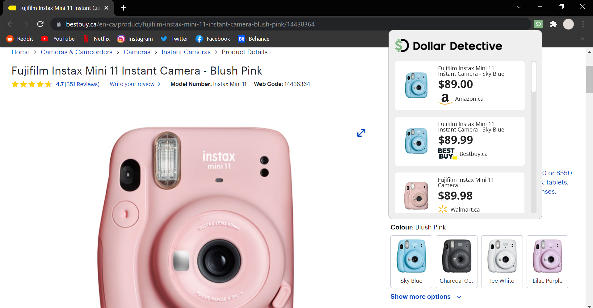
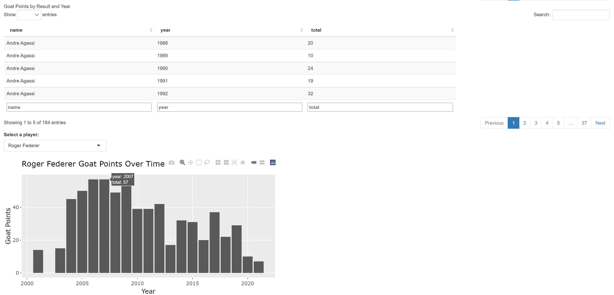

Projects
Mapping Visited Locations
Using Python and libraries like Folium, I generated a map to mark the places I've travelled to. The script reads from a list of locations from a Google Sheets spreadsheet.
Virtual Reality Volleyball Game

This is a fun VR project I built with a classmate at ETH. The code and build is here.
Interactive 3D graphics model of a Rubik's Cube built with Three.js
See the source code and play with the cube.
CS50's Introduction to Artificial Intelligence with Python
Various projects (on top of lectures and quizzes) for each week, focused on learning topics such as search, optimization, natural language processing, etc. Experience is gained in working with libraries for machine learning and experimenting with the intelligent systems designed for the course. Animation above shows an intelligent agent - the computer - play the simple game of tic-tac-toe. The minesweeper game above has an option for the AI to make a move, which the program chooses a spot to clear based on probability. (I hit the mine)
Pruning in 2D Adaptation of KD-tree (UBC CPSC221)

Inspired by Dimitris Ladopoulos in this article in creating a blocky artistic effect on images using strategy underlying common lossy image compression algorithms. The original image is recursively split into rectangles based on hue variability and represented in memory as a tree, which is pruned based on average hue of subtrees. The pictures above are created with different tolerances for pruning.
Price Checking Chrome Extension
This is a browser extension that helps users check the price of similar products by keeping track of prices of products when online shopping. The goal is to make price comparisons quicker with automatic sorting. This was built with 3 other friends in 24h in a hackathon.
R Shiny App for Interactive Data Visualization
A web app with a dynamic ui and reactive elements that make exploring and visualizing tennis player data easier. Custom filters and options can be applied to see more specific data or even to compare player statistics. Behind the scenes, data is collected from official sources, cleaned and organized using both R and Python scripts, before being used in this app.